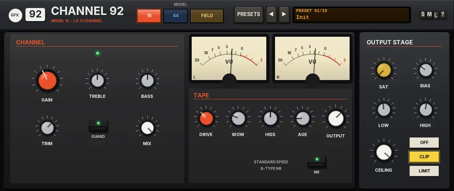
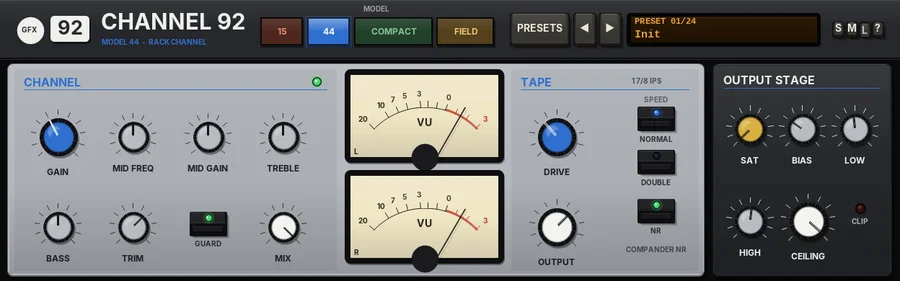
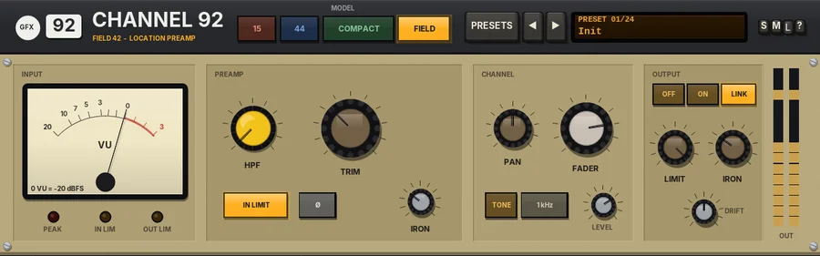
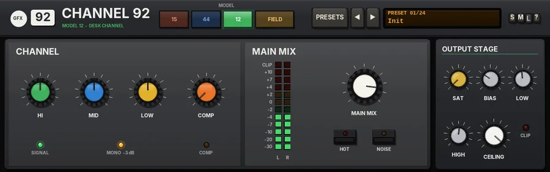

Channel 92
The 92 series channel strip: the lo-fi 15, the rack tape 44, the Model 12 desk channel and the FIELD location preamp in one chassis.

Overview
Channel 92 is the channel strip of the GFX 92 series: 90s domestic, portable and field gear - utilitarian, compact and mobile. It holds four channel strips in one chassis, and the MODEL keys choose which one is in the circuit:
- 15 - the lo-fi channel, in the spirit of the early-80s ultra-portable cassette multitrackers (Model 15).
- 44 - the rack tape channel, in the spirit of the early-90s rack-mount cassette portable studios (Model 44).
- 12 - one channel of the little 12-channel desk from every 90s project studio, as a stereo channel strip (Model 12), with a one-knob compressor.
- FIELD - one input channel of a battery-powered location mixer (Field 42).
Each model is the original GFX plug-in, sample for sample: set the same controls and Channel 92 sounds exactly like Model 15, Model 44, one channel of Model 12 or Field 42 (it nulls against them, with the output clip as described below). Each keeps its own faceplate, controls and layout; the 92 chassis around them adds the shared header, the presets and the output stage. Only the selected model runs, so it costs no more CPU than the original on its own.
Reach for it for
- Lo-fi cassette character on single tracks and stems (15)
- Tape density and punch with a sweepable mid (44)
- A clean, slightly forward desk channel with simple EQ and a one-knob compressor, or a gritty one with HOT (12)
- A transformer mic pre with HPF and safety limiters for dialogue, acoustic and drum tracks (FIELD)
- Trying four flavours of 90s gear on a track without swapping plug-ins
Controls
The 92 chassis
The header
- 92 badge, name
- The series badge and the plug-in name; under the name, in the colour of the selected model, which model is in the circuit.
- MODEL
- 15, 44, 12 or FIELD. Lit coloured keys: the lit key is the model in use (15 by default). Changing model crossfades over 20 ms, so it is click-free even while the music plays; the model you switch to starts from a clean state.
- PRESETS
- Opens the list of all 24 factory presets (a click on the preset display does the same). The list ends with Reset all to defaults.
- ◄ / ►
- Step to the previous or next preset.
- Preset display
- Shows the number and name of the preset in use. New instances open on Init.
- S / M / L
- Panel size: small, medium or large (Large is 1.3 times Medium). The panel also scales to fit the plugin window.
- ?
- Opens a pop-up with the design credit, the GFX website address and the address of this manual. Click anywhere to close it.
OUTPUT STAGE
The house output stage of the 15, the 44 and the 12, in the column at the right of their faceplates: it sits after the model, so it stays as it is when you change between them. On the 15 and the 44 their own OUTPUT level comes after the band saturation, exactly as on the originals. Its soft clipper is always on (no latency); there are no mode keys. FIELD has no output stage controls: its output always clips softly at -0.3 dBFS, as part of the unit.
- SAT
- Band saturation, 0 - 100% (off by default): only the lows and highs are saturated, the mids stay clean, with a soft curve that loosens as the level rises.
- BIAS
- Shapes the saturation, 0 - 100% (30% by default): more bias adds more even (2nd) harmonics, for a warmer, rounder colour.
- LOW / HIGH
- Where the low and high saturation bands start: 40 - 400 Hz (120 Hz by default) and 2 - 16 kHz (6 kHz by default).
- CEILING
- -24 to 0 dB (-0.3 dB by default): the level the peaks are softly clipped at. The clipper starts to round the peaks off about 2 dB below it; below that it does nothing.
- CLIP light
- Lights red while the clipper is working.
Parameter list
Every control is also in REAPER's parameter list. The names start with the model they belong to (15 Gain, 44 Mid freq, FIELD HPF ...); the shared output stage comes last. FIELD Input iron and FIELD Limiter attack / release are in the list only, as on Field 42.
Model 15 - lo-fi channel

Overview
Model 15 is a single channel of the classic early-80s ultra-portable cassette multitracker: a low-voltage, battery-driven preamp, a fixed broad-stroke tone stage, a sluggish tape-head saturation with a top end that closes down as the level rises, and an open, breathing hiss floor with simple single-band noise reduction.
Put it on individual stems to push them towards that compressed, boxy, warm little-recorder sound. The signal runs preamp, then tone, then tape, and MIX blends the result with the dry input.
Reach for it for
- Bedroom-demo character on drums, guitars and vocals
- Warm, boxy saturation that glues transients together
- Lo-fi wobble, hiss and worn-tape dropouts
- Making a clean stem sit with genuinely lo-fi material
- Parallel tape colour with MIX
Controls
Channel
- Signal light
- Glows green when audio is coming out of the plugin.
- GAIN
- The low-voltage preamp, -6 to +24 dB (+6 dB by default). Above 0 dB it clips early and asymmetrically, smearing transients and thickening the low mids.
- TREBLE
- A broad high shelf at 10 kHz, -10 to +10 dB. Push it hard and the shelf itself turns a little gritty and grainy rather than staying clean.
- BASS
- A broad low shelf at 100 Hz, -10 to +10 dB, with the same gentle grit when pushed.
- TRIM
- Input level before anything else, from -24 to +12 dB.
- GUARD
- On by default. Gently eases very hot sources down towards about -18 dBFS average and catches fast peaks above -6 dBFS, so loud sources never overdrive the plugin. It never boosts quiet sources.
- MIX
- The coloured signal against the dry input, 0 - 100%.
OUTPUT
- VU
- One VU meter for the output: it reads the louder side, in the house calibration (a sine peaking at -18 dBFS reads 0 VU). The green light at the top of the CHANNEL section glows when audio is coming out.
Tape
- DRIVE
- The tape saturation, 0 - 100% (35% by default): a sluggish magnetic memory ahead of a soft saturation curve, plus a top end that rolls off further as the level rises, gluing transients together. A small, fixed head bump around 80 Hz is always there.
- WOW
- Wow and flutter in the transport, 0 - 100 (25 by default): a slow wow, a slower random wander and a faint 6 Hz flutter.
- HISS
- The tape's own noise floor, 0 - 100 (50 by default). It ducks a little under the signal and swells back in the gaps. Each side has its own hiss.
- AGE
- An older, worn tape, 0 - 100 (15 by default): the top end goes further and short dropouts creep in, more often the higher you turn it.
- OUTPUT
- The output level, -24 to +12 dB.
- NR
- The simple B-type-style noise reduction, in by default: the quiet highs are lifted before the tape and taken back down after it, which lowers the hiss. Out gives the raw tape, hiss and all.
Tips
- GAIN and DRIVE do different things: GAIN gives the preamp's early, edgy clipping, DRIVE the softer tape squash and darkening. Try one high and the other low.
- On a set of stems, keep WOW low on all but one or two so the mix doesn't drift out of tune with itself.
- Switching NR out is the quickest way to that hissy, open home-recording sound.
- Turn MIX down to 40 - 60% to keep the attack of drums while adding the tape's body.
Model 44 - rack channel

Overview
Model 44 is a single channel strip in the spirit of the early-90s rack-mount cassette multitrack gear. The signal goes through a clean, high-headroom preamp, a three-band EQ with a sweepable mid, and then a tape stage: a dense magnetic saturation ceiling with a NORMAL / DOUBLE speed switch and compander noise reduction.
The preamp itself stays clean - the colour and the ceiling come from the tape. Double speed raises that ceiling, extends the top end and tightens the sub-bass, for a punchier, cleaner sound; normal speed is softer, darker and saturates earlier. The noise reduction is tuned to pump less than the earlier 80s machines.
Reach for it for
- Adding cassette-tape density and warmth to a single track
- Drums and bass that need to sit tighter and punchier (DOUBLE speed)
- Quick tone shaping with a sweepable mid
- A softer, darker lo-fi tone (NORMAL speed)
- Parallel tape colour with MIX
Controls
CHANNEL
- Signal light
- The green light glows when audio is coming out.
- GAIN
- The preamp gain, -6 to +24 dB (+6 dB by default). The preamp itself stays clean; turning it up drives the tape stage harder.
- MID FREQ
- The centre of the sweepable mid band, 200 Hz to 5 kHz.
- MID GAIN
- Cut or boost at MID FREQ, -12 to +12 dB, with a fixed, fairly broad width.
- TREBLE
- A high shelf at 12 kHz, -10 to +10 dB.
- BASS
- A low shelf at 80 Hz, -10 to +10 dB.
- TRIM
- Input level before anything else, from -24 to +12 dB.
- GUARD
- On by default. GUARD gently eases very hot sources down towards about -18 dBFS average and catches fast peaks above -6 dBFS, so loud sources never overdrive the plugin. It never boosts quiet sources. The light shows when it is on.
- MIX
- Blends the coloured signal with the dry input, 0 to 100%. 100% is fully through the strip.
OUTPUT
- VU
- One VU meter for the output: it reads the louder side, in the house calibration (a sine peaking at -18 dBFS reads 0 VU). The green light at the top of the CHANNEL section glows when audio is coming out.
TAPE
- DRIVE
- How hard the tape's saturation ceiling works, 0 to 100% (35% by default). More DRIVE rounds the peaks off sooner and harder, for a denser sound.
- NORMAL / DOUBLE
- The tape SPEED. NORMAL (1 7/8 IPS): the top end rolls off around 10 kHz and the saturation starts earlier. DOUBLE (3 3/4 IPS): the ceiling sits higher, the top end reaches about 16 kHz, the sub-bass below about 45 Hz is tightened and transients stay punchier.
- NR
- Compander noise reduction, in by default. It compresses the signal 2:1 with a treble lift on the way onto the tape and expands it 1:2 coming back. Because the expander follows what comes off the tape, it breathes a little, though more gently than the 80s units. Switch it off for the raw tape sound.
- OUTPUT
- The output level, -24 to +12 dB.
Tips
- Set GAIN for the amount of tape colour you want, then bring OUTPUT down to match the level before you judge it.
- Switch between NORMAL and DOUBLE on drums: double speed keeps the snap, normal speed softens and thickens it.
- With NR in and plenty of DRIVE you can hear the compander breathe; switch NR out if you want the saturation without the movement.
- Use MIX at 30-60% to add tape density under a track without losing its transients.
FIELD - location preamp (Field 42)

Overview
Field 42 is one input channel of a small, battery-powered location mixer of the kind used for film and broadcast sound, for a single track. It works in mono or stereo, as REAPER decides. The signal runs as on the hardware: a sweepable high-pass filter, TRIM into a transformer-balanced preamp, a fixed input "safety" limiter, polarity, FADER and PAN, then the output limiter and the custom output transformer.
At normal levels it is very clean. Push TRIM and the input transformer thickens the low end before the preamp meets its rail; the limiters catch peaks hard and fast, as they were designed to protect a recording on location. Levels are lined up as on location gear: 0 dBu = -20 dBFS = 0 on the VU.
Reach for it for
- Dialogue, voice-over and location recordings
- A clean, safe preamp-and-limiter on any track
- Gentle iron weight on drums, bass and acoustic instruments
- Catching stray peaks before they reach the mix
Controls
INPUT
- VU meter
- The level after the preamp, before the limiters, with VU ballistics. 0 VU = -20 dBFS.
- PEAK
- Lights when the preamp's output goes above -1 dBFS.
- IN LIM / OUT LIM
- Light when the input or output limiter is working.
PREAMP
- HPF
- A high-pass filter, 80 to 240 Hz, 12 dB per octave, before the preamp. Fully left is OFF.
- TRIM
- Gain into the preamp, -20 to +40 dB.
- IN LIMIT
- The input safety limiter: fixed at -2 dBFS (+18 dBu), 20:1, very fast. On by default.
- Ø
- Polarity reverse.
- IRON
- The input transformer's colour (also in the parameter list).
CHANNEL
- PAN
- Constant loudness: +3 dB at hard left or right, as on the hardware. On a stereo track it works as a balance.
- FADER
- Unity at 0 dB; -40 dB (OFF) to +10 dB.
- TONE
- A line-up oscillator that replaces the signal. The next key picks 1 kHz, 400 Hz or 100 Hz; LEVEL sets -20 to +8 dBu (0 dBu = -20 dBFS).
OUTPUT
- OFF / ON / LINK
- The output limiter: off, each side on its own, or stereo-linked (the default).
- LIMIT
- The output limiter's threshold, +4 to +20 dBu (-16 to 0 dBFS), 20:1.
- IRON
- The output transformer: low-mid weight and a softer top when driven.
- DRIFT
- See Drift below.
- OUT meters
- The output level, left and right.
Parameter list only
FIELD Input iron (the input transformer's colour, 30% by default) and FIELD Limiter attack and release (1 ms and 200 ms by default).
Drift
DRIFT (0 - 100%, 50% by default) is battery sag. The supply voltage wanders slowly and droops under heavy, sustained level, so the preamp's headroom, the limiter thresholds and the transformers' drive all move a little - you hear it most when the unit is pushed. 50% is the standard amount, 100% twice that; 0% is a fresh battery.
Tips
- Set TRIM so the VU swings around 0 on the loud parts; that is where the iron starts to colour.
- Use the TONE to line up levels between tracks or with other gear.
- LINK keeps a stereo image steady under limiting; ON lets each side limit on its own.
Output
The output always clips softly at -0.3 dBFS (the house clip at its default ceiling, no band saturation): it is part of the unit, with no controls. The TRIM glides to a new setting over about 20 ms, so turning it never clicks.
Model 12 - desk channel
Model 12 replaces the former Compact 12.

Overview
One channel of the Model 12 desk as a stereo channel strip: the desk's own channel EQ on both sides, then the desk's summing amp with MAIN MIX, HOT and NOISE, so a track gets the clean, tight, slightly forward sound of the little desk - or its gritty edge when you run it hot. Level, pan, mute and solo are left to REAPER's track. A one-knob compressor, as on many compact desks (the same design as on Strip 102), sits after the EQ.
Mono or stereo is automatic. When the two sides carry the same signal (a mono source) the strip treats it as one of the desk's mono channels and sits it 3 dB down, as the desk does at the centre of its pan; a stereo source passes at full level, as on the desk's stereo pairs. The change glides in or out over about 50 ms, so it never clicks. With COMP at 0 it sounds exactly like that mono channel, or that stereo pair, of Model 12 summed on its own (with MID at 0 for a stereo pair, which has no MID on the desk).
Reach for it for
- Clean, honest channel EQ with a touch of desk character
- Grit and bite on drums and bass with HOT
- Quick, even level on vocals and guitars with the one-knob COMP
- Stereo keys and synths through a stereo desk channel
Controls
CHANNEL
- HI
- A high shelf at 12 kHz, -15 to +15 dB.
- MID
- A peak at 2.5 kHz, -12 to +12 dB.
- LOW
- A low shelf at 80 Hz, -15 to +15 dB.
- COMP
- The one-knob compressor, 0 - 10 (0 = off, the default). Turning it up lowers the threshold (0 to -30 dB), raises the ratio (1:1 to 10:1) and adds make-up gain, so at normal levels (around -17 dBFS RMS) the overall level stays the same within about 1 dB however far you turn it. The detector hears both sides together.
- SIGNAL
- Glows green when signal arrives.
- MONO -3 dB
- Lights while the strip hears a mono source and applies the desk's 3 dB centre dip.
- COMP (light)
- Lights when the compressor is taking off more than 1 dB.
MAIN MIX
- Meters
- 12-LED meters for the left and right output, 0 = 0 VU = -18 dBFS.
- MAIN MIX
- The desk's main level, -60 dB (OFF) to +10 dB, into its summing amp.
- HOT
- Drives the summing amp into its rails: grit, edge and a little bite, level-matched.
- NOISE
- Adds the desk's own hiss floor, about -84 dBFS.
OUTPUT STAGE
The 92 output stage column, shared with the 15 and the 44: SAT, BIAS, LOW, HIGH, CEILING and the CLIP light (see The 92 chassis above).
Tips
- HOT on a drum bus or bass is the classic 90s project-studio grit; switch it in and out to hear it.
- COMP between 2 and 4 evens out a vocal or acoustic guitar without sounding squashed; past 7 it pumps on purpose.
- Set the level, pan and mutes on REAPER's track as usual: the strip has no LEVEL, BAL or MUTE of its own.
Presets
Every preset of the three originals, named by model. Choosing one also selects its model. Like the originals, presets leave the output stage (and the controls each original left alone) as they are.
- Init
- The 15 at its default settings: the state a new instance opens in.
- 15: Bedroom Demo
- The standard setting with a touch more TREBLE, BASS and DRIVE, NR in.
- 15: Hot and Boxy
- The preamp pushed to +15 dB into 70% tape drive, with more hiss and age.
- 15: No NR, Open Tape
- Noise reduction out and the hiss turned well up.
- 15: Worn-out Portable
- Heavy wow, lots of age and dropouts, a little extra bass.
- 15: Clean-ish Portable
- Preamp at 0 dB, light drive, wow, hiss and age.
- 44: Clean Double Speed
- Double speed with light drive, a small treble lift and NR in.
- 44: Normal Speed Warm
- Normal speed, more gain, a little low-mid and bass lift, NR in.
- 44: Rack Punch
- Double speed, 14 dB of gain and 55% drive, with a 2.5 kHz and treble lift.
- 44: Scooped Mids
- Double speed with a 4 dB cut at 600 Hz and a touch of treble and bass.
- 44: No NR
- Normal speed with the noise reduction out: the raw tape.
- 12: Clean Channel
- Flat EQ, COMP off, HOT and NOISE off, MAIN MIX at 0 dB.
- 12: Hot Channel
- Flat, with HOT on: the summing amp pushed into its rails.
- 12: Hot and Noisy
- HOT and the desk NOISE: the real thing.
- 12: Vocal Presence
- HI +2, MID +3, LOW -3 dB with COMP at 4: forward and even.
- 12: Keys
- HI +2, LOW +1 dB, a light COMP at 2.
- FIELD: Init
- Clean: HPF off, unity gain, both limiters on.
- FIELD: Dialogue Boom
- HPF at 120 Hz, +6 dB.
- FIELD: Lavalier
- HPF at 160 Hz to clear clothing rustle and rumble.
- FIELD: Acoustic
- HPF at 85 Hz, a little more iron.
- FIELD: Drum Room
- +12 dB into the iron, output limiter at +14 dBu.
- FIELD: Kick and Bass
- HPF off, heavy iron, limiter per side.
- FIELD: Hot Field
- +18 dB, lots of iron, a low output limit: dense and driven.
- FIELD: Safety Net
- Unity gain with the output limiter at +10 dBu: a quiet, safe ceiling.
- Reset all to defaults
- (Last in the list.) Every control of every model, the MODEL (back to 15) and the output stage to their starting values.
Changing preset on the 15 is click-free: the tape ducks out for a moment, the new settings come in at silence and it fades back in (as on Model 15).
Tips
- To compare the models on a track, set the OUTPUT (15 / 44) or FADER (FIELD) so they play at the same level, then switch MODEL while the track loops: the 20 ms crossfade makes it a fair A/B.
- Each model remembers its own settings while you use another, so you can set them all up and pick the one that fits.
- The output stage stays put when you change between 15, 44 and 12; the soft clip is always there as a safety net on every model.
- Only FIELD drifts (battery sag); the 15 has its own wow and flutter instead.
File: gfx-channel-92.jsfx